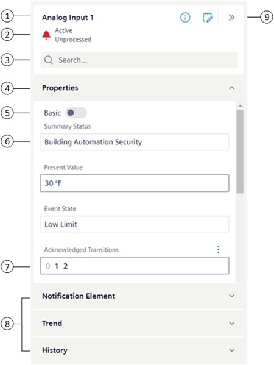

Properties
This section provides background information for properties and related items. For procedures or workflows, see the step-by-step section.
In Basic mode, some properties may be configured to display only in off-normal state. Advanced mode displays more properties than Basic mode. When you command a property, the status of the command displays for the commanded property.
Properties Workspace

1 | Object | Displays the name of the selected object. If multiple objects are selected, the name displays as Multi selection. |
2 | State | Displays the current alarm state for the selected object. |
3 | Filter | Filters displayed properties. Text is filtered as it is entered in the Search box. |
4 | Properties Header | Displays object properties for Basic and Advanced modes. |
5 | Property List | Basic mode.
|
6 | Gray border | Commands only accessible by selecting if present. No additional property information available. |
7 | Dark gray border | Indicates a selectable property. Depending on the property, you can modify its value or view more detailed information about the property. |
8 | Group Headers | Display items related to the currently selected object. |
9 | Toolbar | Information Button: Memo Button: Expand/Collapse Button: |
 Advanced mode.
Advanced mode.Display of Related Items
Displays the items used for most daily operations. The display mode that is currently selected in the Layout menu determines how related items text displays. For example, text can be displayed as description, name, description plus name, or name plus description.
If you select one object, Related Items displays all links associated with that object. If you select two or more objects, Related Items displays only those links that all selected objects have in common.
The following example shows three objects selected with the following links:
Object | Related Items |
EastWingLabTemp | Monthly Energy Consumption Report |
WestWingOfficeTemp | Monthly Energy Consumption Report |
NorthWingOfficeTemp | Monthly Energy Consumption Report |
Multi-selecting all three objectsdisplays the following related items because they are common to all three objects:
- Monthly Energy Consumption Report
- Third Floor Heating/Cooling Schedule
The other link, Third Floor Temperature Trend, does not display because it is not common to all three selected objects.
Filtering
Filtering helps you reduce the number of properties shown during a search in Properties. You filter by entering text in the Search box, which filters as criteria is entered.
Display of Selections
If you select a single object, only the properties you have privilege to display.
If you select multiple objects and try to access a property that you do not have privilege to, or the property does not exist for an object, N/A displays.
Why Command a Property?
You command a property to change its current state. For example, you might command to initiate an action, enable or disable a property, acknowledge or reset the status of a property, or override or release an override of a control program.
Commanding a property is also useful under these conditions:
- When user action is required to manage an emergency
- When an alarm indicates a malfunctioning device
- When performing preventive maintenance
- When energy savings is desired
- When managing operating hours totalization
Examples of Common Commands:
- Acknowledge
- Change command priority
- Coldstart
- Enable/Disable
- On/Off
- In service/Out of service
- Override/Release
- Reset value for equipment operating hours
- Set a new point value
- Upload
Example of Commanding
At your facility, you want to change the temperature in a conference room from 68 to 73°F (20 to 22.78°C). Using the management station software, you send a command to change the Present Value of the Temperature Setpoint object of the room to override the normal system control.